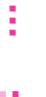
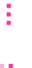

Group Reflection of team members

During those four weeks, Kuri team members worked very well together given the short period to complete our report paper, website, and project demo. Communication between us was good and very effective. Our planning was very detailed, with deadlines for each week. Overall, progress was going well for all three aspects of this assignment: Writing, Web development, and Game development.
However, our planning and scheduling could still be improved to be more professional, utilizing more tools provided by the school such as Canvas, Outlook, and GitHub. Our skill working together on GitHub and version controlling our project and website was still somewhat limited due to our lack of experience working on real-world projects.
As the lead game developer, one thing that came as a surprise to me was the steep learning curve of our chosen game development framework. From this, I have concluded that for future projects, I would need more careful technical preparation and research before committing to a project.
As the team’s leader and project manager, I have learned that communication is incredibly important when working in a team. Having a communication breakdown, such as a member being unresponsive or incoherent scheduling and tasks between members, is the worst thing that can happen to a team. Hence, the first meeting as a group plays a key role in bringing the members together, as concerns can be addressed preemptively and rules can be set openly and clearly ahead of any commitment.
 Nguyen Hoang Linh
Nguyen Hoang Linh
Throughout my time working as a Kuri member, I could see the improvement in the way our team worked each week. I think the key point to this is that the communication between our members had become better throughout the project. The goals of each week had been divided into smaller tasks so that each member could know exactly what tasks they needed to finish. At the end of each week, we informed each other of our progress and at the beginning of next week, we set our detailed planning and deadlines. In general, all three groups had completed their work really well for this assignment. For the game development, Mike had completed his beta version of the game and was ready to release it soon for beta testing. The game worked amazingly well and the gameplay was really interesting. For the web development that I was in charge of as the leader, I could see that there was still some missing communication between me and Huy, the other web developer, which led to the delay of the website. I could also see that we still had certain issues and problems working as a team on Github, which led to several unnecessary conflicts. However, we had worked on and resolved that issue, so the website was up and running smoothly. Last but not least, the writing group had spent a lot of time writing and editing the final report along with creating the slides and script for the standup meeting. The work process of Kuri as well as the quality of each team’s work were fascinating. Overall, this was a great opportunity for me to learn more by working with these people.

On one hand, various things went very well throughout the weeks we worked together. Firstly, our communication was quite successful: we responded regularly and quickly to each other’s messages, and we updated our progress weekly so that our team leader and other members of Kuri could keep track of our work. Secondly, we were usually on time with our weekly deadlines, even though we sometimes needed to remind each other of the deadlines and tasks.
On the other hand, there were things that we also needed to work on. Since we were not very proficient in using GitHub as a team, we were not too organized and able to use the tool to its full potential. Hence, in the future, we will need to discuss how we will use GitHub as a team at the very beginning of the project so that our workflow on GitHub can be more smoothly.
While completing this group assignment, one thing that surprised me was how much our team leader had planned for the project. He told me that he had several backup plans and he also kept a lot of options open so that we can be flexible. This made me realize how important project planning is and how detailed project planning had helped us succeed in the project.
From this project, I have learned that for groups to be successful, communication is extremely significant. For members not to get lost on what the team is working on and to know exactly what their tasks and responsibilities are, we need to communicate frequently and update each other on our progress. Members should also ask questions or ask for help when needed so that other members can support them or solve it together.

After working with our team Kuri for several weeks, I noticed that every single member had worked really hard. We learned a variety of new things every week, so our group’s productivity improved considerably, and I think that this was due to our good communication. Our leader assigned tasks to each member logically based on their ability and skills. Furthermore, the tasks for each week were very clear and divided into many subtasks so that we could do them step by step to accomplish our aims. Thanks to this clear and logical strategy, all of the members had worked successfully on this assignment. Regarding web development, despite my lack of knowledge, Linh and I managed to deliver a website that had all the features needed for our group project. Linh did his job perfectly while I was sometimes still confused with Github and writing HTML. Next, game development, which was led by Mike, was one of the most important parts of our project. Although there were some bugs in the game, it still worked out the way our team wanted it to. Lastly, the writing group tried their best to write and deliver a final report that was of high quality, which allowed us developers to focus on our tasks. In conclusion, our team has learned from each other and improved ourselves significantly, and we were able to not only explore more about the IT field but also about collaboration and teamwork.

We worked together for four weeks and everything went by very fluently. Our weekly plans were usually finished in time, and we had face-to-face group meetings mostly every week so we could know the up-to-date progress of each group. The products of our work were of high quality: The game had a retro 8-bit design with moderately challenging gameplay, the website had a visually pleasant format and styling, and the report progress went well as everything was finished in the middle of week 12.
However, we did not work on GitHub very efficiently: On some occasions, a member forgot to pull the files from our online GitHub repository, which caused a conflict when they pushed their version, and some members needed to send their files to another member to push the files. We can improve this by remembering to pull the files while working on the same branch or create many branches for members to work on.
A surprising aspect of our group was that our team could progress well. Although we had only known each other since the start of this course, our communication and workflow were good enough to help us finish our jobs before the small deadlines that we created for ourselves within each group.
Effective communication is what I have learned from working in a group. It can boost productivity because it can make each member feel more responsible for their work. Good communication can also boost morale and be useful when someone in the group needs help.
Kuri’s group reflection
Within these four weeks, various aspects of the project went by smoothly. To begin with, none of the teams faced any significant problems with their respective tasks; all teams were able to finish the core functionalities and features of their work with good quality. Additionally, since we were quite strict with deadlines, Kuri members usually submitted their work on time. The second aspect that went well is our scheduling and team meetings: every member remembered and attended most of the meetings, even if they could not be there in person, and when a member missed a meeting, we informed them of the main points through our group chat. Our scheduling and meetings were successful because we set the schedule, including the deadlines and meetings, clearly for each week using the Outlook calendar; hence, members could easily track and know the schedule for each week. Lastly, we did not encounter any serious conflicts between members since everyone worked very well together. We listened to and respected each other, and we kept an open mind to welcome other members’ ideas and opinions.
Nevertheless, there were still elements that needed to be improved. As mentioned and discussed by most of the members, our team had some difficulties with collaboration on GitHub since we were not very experienced with this tool. Another part of our project that did not go well is the bugs in our game. Even though we did not have any major issues with the fundamentals of the game, we still had a lot of bugs. Moreover, our game could not run on iOS and Mac devices; therefore, this is an element that we will need to figure out in the future if we want to continue with this project.
While working on the project, a few factors surprised all of us. Firstly, our choice of the game framework (Phaser) was harder and the learning curve was steeper than expected, so the game development group had to investigate Phaser and JavaScript before the project officially started. Regarding the website, the chosen template looked pleasant but working with it was not the best-case scenario for us. There were no clear instructions or any documents to guide us through using the template, and the .css and .js files of the template were both minimized. Therefore, it took us some time to understand the code of this template before we could use it. The last surprising factor - in a positive way - was how well we worked together. Even though we first met each other through this class at RMIT, we completed our weekly plans effectively and did not have any major disagreement within our group.
Working with each other helps us attain new knowledge on how a team should operate. We recognize how important the first meeting is, as it can set the workflow and determine the working vibe of the team. We also realize that to lead others, we should be an example for them to follow so that we can create an encouraging working environment. For instance, when a member does not know how to use GitHub as a team, the leader should directly demonstrate and show them how to do it. Lastly, a leader should also utilize each member’s abilities and strengths and delegate suitable tasks to every member to get the best performance out of the team.